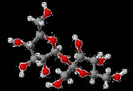
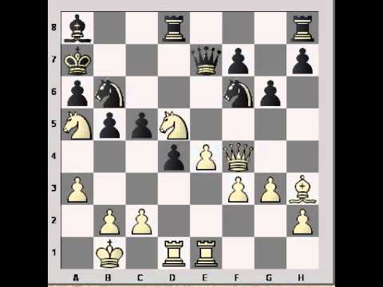
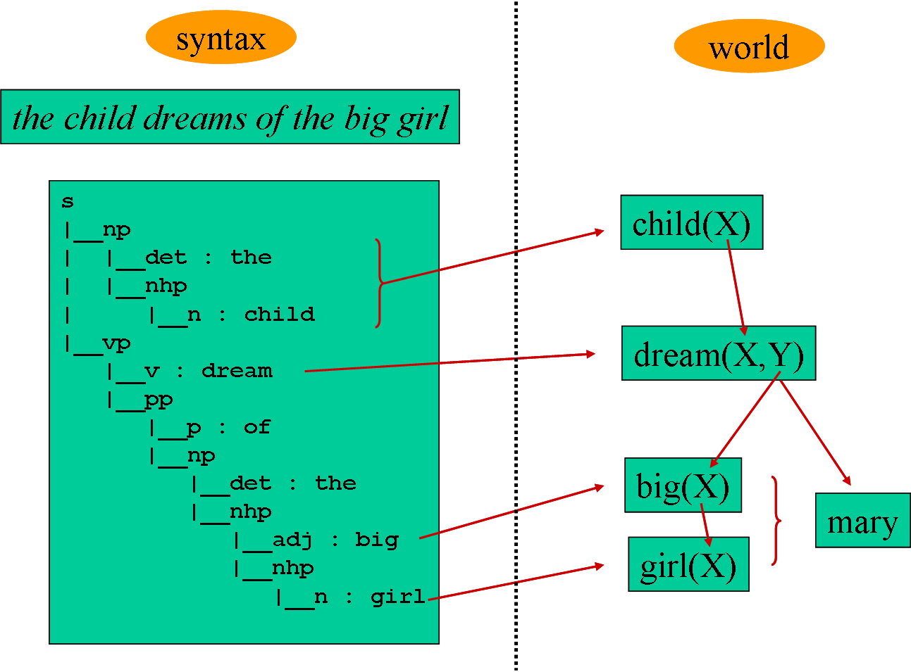
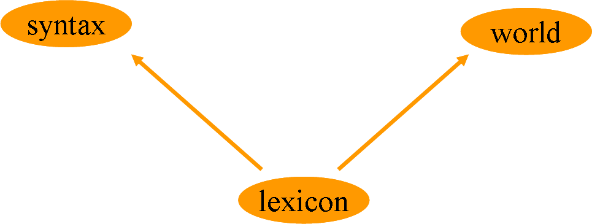

Many sentences make sense out of context, or within a reasonable "average" context.This is why machine translation seems so efficient.
La vanille est une épice constituée par le fruit de certaines orchidées lianescentes tropicales
→ Vanilla is a spice made from the fruit of certain tropical vine orchids.
However, on many occasions, interpretation requires genuine intelligence, which presupposes the ability to interpret in context.
"Can you get the little red book on the right stack on my desk?" → which book?
However, on many occasions, interpretation requires genuine intelligence.
"A small galaxy"vs."A small molecule" → definitely not the intersection with the set of small objects
"I lost my keys to the right of the tree." → how far away from the tree? 1cm, 1km?
However, on many occasions, interpretation requires genuine intelligence.
"He felt so lonely in this desert that he used to walk backwards sometimes to see footsteps in front of him." (after Hortence Vlou) → whose footsteps are we talking about?
Procedural semantics computes meaning in context.
One crude way to achieve meaning construction is to translate phrases into Prolog predicates,
and then to execute the resulting Prolog program using a knowledge base.
Background knowledge
book('Kritik der reinen Vernunft’, yellow, left)
book('Des intelligences TRES artificielles’, white, right)
book('On the origin of species’, beige, right)
book('La serpe d'or’, white, left)
book('The geometry of meaning’, white, right)
book('Metaphors we live by’, red, right)
For example:
"the little red book on the right stack on my desk"
?- book(T, red, right). T = 'Metaphors we live by'.
This Prolog-based solution is great, as it achieves interpretation in context.
However, it only works if we have convenient predicates that match words.
The Prolog-based solution won’t work when
the evaluation of predicates isn’t purely logical, but requires analog computation (e.g."small", or "to the right of the tree")
undertanding requires visualizing the scene ("walk backwards to see footsteps")
interpretation depends on semantic constraints (binding, aspect...)
The present lab deals with the Prolog-based interpretation.

We will be able to interpret
"the pawn to the right of the white knight"
as meaning:
pawn(black,(2,5)) (the black pawn at location (2,5))
In subsequent lectures and labs,
we will consider
the contrast operation and
the rules of Aspect.
The goal of the present lab work is to explore various ways to introduce
semantic calculus on top of syntactic processing. In particular, we
will illustrate the idea that semantic interpretation involves more than
structural translation and requires some context-dependent calculus,
according to what is called procedural semantics.
For instance, we would like that a sentence like:
the child talks with the nice girl about the room
be interpreted, in an appropriate context, as:
talk(John, Ann, my_room)
In
what follows, we will consider the use of semantic features, and then
the possibility of interfacing syntax with reasoning and perception.
Features structures
The grammar used here is built around DCG rules. If you are not yet familiar with DCG rules, go back to the lab work on basic syntactic parsing before going any further. We will make use of
feature structures
as arguments of phrases. But we need more. We will build a semantic
representation that can be interpreted as a prolog predicate. For
instance, "Mary thinks of John" will be interpreted as think(Mary, John). To do so, we introduce a second slot in phrases, beside features, to host the predicate structure.Lexical entries will be DCG rules like the following one, which is an amplification of v --> [believes]: v([gloss:believe,num:sing,pers:3,subj:dp(_), cpl:[cp(that)]], believe(_,_), v(believe)) --> [believes].Note the three extra arguments in green, red and blue. These three extra arguments also appear in rules.
Here is the rule vp --> v, dp: vp(FV,PVP,TVP) --> v(FV,PV,TV), dp(FDP,PDP,TDP), { % transitive verb, eg. 'like' att(FV, cpl, [dp(FDP)]), link(_, PV,PDP,PVP), TVP = vp(TV,TDP) }.The above rule says that a verb phrase may consist of a verb followed by a determiner phrase: likes the boy.
The three extra arguments represent structures:
FV: Feature structure (here for verb phrase) that is used to check various forms of agreement. For instance, the feature structure attached to the verb believe is [gloss:believe,num:sing,pers:3,subj:dp(_), cpl:[cp(that)]]. (here, gloss indicates a string that is used in the output display)
PVP: Predicate (here, predicate for verb phrase) which will be used to compute the interpretation. For instance: believe(_,_)
TVP: Tree structure for display (here for verb phrase). For instance: v(believe)
The part within {brackets} is Prolog code.
- att is used to get the value of a feature (here cpl = complement) in the feature structure.
- link is used to perform the semantic link between syntactically connected phrases (see below).Note the presence of the determiner phrasedp, which linguists recommend to use instead of np (np is now used to represent undetermined noun phrases, like nice girl, whereas a nice girl becomes a dp).
The files used during this lab work are in tp_sem.zip:
sem_main.pl: main program - contains predicate link
sem_world.pl: now empty - will contain domain knowledge
sem_util.pl: utility predicates (no need to dive into this)
Install these four files in a directory. Execute sem_main.pl and type the predicate go. ?- consult(sem_main). true. ?- go. sentence > the nice girl likes the boy
[gloss:like,num:sing,pers:3,subj:dp([gloss:girl,num:sing]),cpl:[dp([gloss:boy,num:sing])]]
s |__dp | |__det : the | |__np | |__adj : nice | |__np | |__n : girl |__vp |__v : like |__dp |__det : the |__np |__n : boy
Our grammar accepts the two following sentences:
the child sleeps
the child sleeps
*the room sleeps
In order to discriminate between these two sentences, one may wish to
introduce a "semantic agreement" between the subject and the verb.
To do this, introduce a new attribute, anim, which may take two values: animate and inanimate.
You may change the lexical entries of sleep, child and room, and the rule s --> dp, vp. to check for semantic agreement, so that the child sleeps be still accepted, while *the room sleeps become incorrect. Since other words in the lexicon may not have the attribute anim in their structure, the predicate att returns a variable when the attribute is absent. As a consequence, the game sleeps will still be accepted.
Semantic Agreement (0)
Copy the new definitions of child and sleep here.
Semantic Agreement (1)
Copy the new rule s --> dp, vp..
Note that it would be better if sleep assigned the attribute value animate to its subject, but this would require recursive attributes (see advanced lab work).
Semantic Agreement (2)
What kind of attributes do you think could be used to discard nonsense sentences like:
*the cat talks with the room about the cat
*the room is in Mary
What can you say about your solution?
Interfacing NL with Prolog

Let’s say that in our context, The nice girl refers to Ann.
To get this interpretation, some inference steps might be needed
between words and meaning. Prolog seeems ideally suited to bridge the
gap between natural language expression and meaning. The idea consists
in representing the meaning of parsed sentences as Prolog programs that
may be executed.
For instance, we expect the interpretation of the boy dreams of the nice girl to be boy(X), girl(Y), nice(Y), dream(X, Y) which, once executed, might end up as dream(john, ann) if the programme is able to understand that the nice girl stands for ann.As it stands, the program provides a minimal semantic interpretation:
?- go. Sentence > the boy dreams of the nice girl Syntactically correct [gloss:dream,num:sing,pers:3,subj:dp([gloss:boy,num:sing]),cpl:[pp(of)]] . . . ---> dream(_28336,_28338)
To get a better result, we need two additional mechanims.
perform semantic linking between merging phrases (e.g. dream(X,Y) and boy(Z) should share a variable when connected)
execute recognized predicates (e.g. boy(Z) could return Z = john).
In Prolog, shared variable establish an explicit link between predicates.
boy(X), girl(Y), dream(X,Y)
If we execute the above line as a program, Prolog is able to instantiate the variables and to execute the resulting predicates:
Continue to dream, john! X = john, Y = ann
Natural language functions differently, as it has no explicit variables.
When two words get merged in a phrase,nice girl
. . .
Natural language functions differently, as it has no explicit variables.
When two words get merged in a phrase,nice girlProlog introduces predicates
nice(X), girl(Y)
Natural language functions differently, as it has no explicit variables.
When two words get merged in a phrase,nice girlProlog introduces predicates
and then says that the variables are the same.nice(X), girl(X)
Natural language functions differently, as it has no explicit variables.
When two words get merged in a phrase,nice girl Natural Language seems to do the same, but implicitely.
This implicit form of semantic link may lead to ambiguities.
Consider for example the phrase:The love of children
When translated into Prolog, it may give: children(X), love(X, Y)
or:
children(Y), love(X, Y)
We don’t know whether the children are the ones who are loving or who are loved.
Semantic link is not always ambiguous.For instance, in active languages such as English or French
(and contrary to ergative language such as Hindi or Basque),
verbs tend to share their first argument with their subject. The girl talks to the boy
This sentence is not ambiguous:
girl(X), talks(X,Y), boy(Y).Here, argument sharing is constrained by syntax.
Enable semantic link by commenting the catch-all line that comes first in the definition of link in sem_main.pl.
This will allow the clause coming next to it to be executed and so the
semantic linking to operate. Reload the program (you might type make. at Prolog’s prompt) and run it anew.
You should get the following outputs in turn:
?- go. Sentence > the boy dreams of the nice girl dream(girl,boy) this sentence makes sense type [;] to see alternatives... ; dream(boy,girl)
(note that you may disable the tree display by commenting the print_tree line in dcg_parse)This
is better, but it is not yet the kind of interpretation we want. First,
we want to avoid the dreamer/dreamee symmetry. To fix this problem, we
have to restrict argument sharing during semantic linking.
To do so, we might instantiate the first argument of link
in sem_Grammar.pl whenever link
is invoked.
to indicate which argument of the first predicate should be shared.
Replacing ‘_’ by 1 means that the first argument is shared; replacing it
by 2 means that the second argument is shared, and so on.
If you do it correctly, the sentence the boy dreams of the nice girl will now receive only one interpretation.
Semantic Linking (1)
Copy the new rule s --> dp, vp. here.
Semantic Linking (2)
Copy the new rule vp --> v, dp. here.
Ditransitive Verbs
Add a rule in sem_Grammar.pl for verbs that take two prepositional complements.
For instance, Ann talks with Pat about Mary should be successfully analyzed.
Copy the rule below.
Adding a procedural component to semantics
To go one step further in the interpretation, the program should understand that the nice girl means Ann. To do this, we have to say to Prolog that Ann is a girl and that she is nice.Open sem_world.pl and replace the existing lines by this knowledge: girl('Ann'). boy('John'). nice('Ann').Now we execute our interpreter again.
?- go. Sentence > the boy dreams of the nice girl [gloss:dream,num:sing,pers:3,subj:dp([gloss:boy,num:sing]),cpl:[pp(of)]] --> dream(John,Ann) this sentence makes sense
Not bad! Now, the program understands who we were talking about by saying the nice girl.
You may get the meaning of phrases instead of full sentences:
?- go(dp). Phrase > the nice girl Syntactically correct [gloss:girl,num:sing] girl(ann) this sentence makes sense

Note that lexical entries are now duplicated, as a word such as ‘girl’
now appears both in the grammar and in the ‘world’ definition. We may
think of phonetic forms such as girl or nice as being merely associated both with concepts in the "world" and with syntactic categories in the grammar.
Procedural Semantics
Augment the world so that the child talks with the nice girl about the room may be interpreted as:
talk(John, Ann, my_room) talk(Pat, Ann, my_room)Insert the new clauses below.
Procedural Semantics (2)
Introduce a new lexical entry daughter in the grammar and augment the world so that the child talks with the daughter of the nice girl about the room may be interpreted as:
talk(John, Lisa, my_room)Insert the lexical entry and the new clauses below.
The "secret" of procedural semantics in this implementation lies in the call to execute
that appears at the end of link. Its purpose is to try to make sense of the phrase that has just been recognized by executing it as a predicate of the world.
The current program does not "execute" to topmost phrase.
Uncomment the "execute" line in dcg_parse to trigger the interpretion of the final output predicate.
Add the following line to sem_world.pl:
dream(_, _) :- writeln('\n***** Continue to dream! *****\n').
and try again the sentence "the boy dreams of the nice girl".
Suggestion
You may note that as it is implemented, the system is underconstrained.
The semantic linking doesn’t know which argument to choose when linking talk('John',Y) with daughter('Ann', 'Lisa').
The problem comes from the fact that Prolog’s execution of daughter('Ann', X) produces an instantiated predicate daughter('Ann', 'Lisa') instead of merely 'Lisa'.
You may change the definition of ‘link’ to make it closer to a ‘merge’, that is, the output of daughter('Ann', X) should be ‘Lisa’ rather than an instantiated predicate.
Semantic contraints
The current program accepts nonsense sentences like the room talks with the child about Mary.
One solution to avoid this would be to introduce semantic features such as ‘animate’ to constrain matching.
This solution is wrong for two reasons:
inflation of the number of features
impossibility of nearly metaphorical expressions such as ‘a talking cat’, ‘talk with the parliament’, ‘we put our hope in Ann’.
The solution adopted by procedural semantics is to transfer the ‘animate’ constraint to the world.
World Constraints
Define animate by adding Prolog clauses to the world saying that
an entity is animate if it is a boy or if it is a girl.
Then add a predicate talk to the world that checks whether the two first arguments comply with the constraint of being animate.Insert the new clauses below.
Does the program now make a difference between:
- the girl talks with the child about Mary
- the room talks with the child about Mary ?
It seems that we merely replaced static syntactic features by static clauses in a Prolog program.
The point of procedural semantics is to separate what belongs to the grammar (e.g. agreement in number)
from what belongs to semantics. The latter depends on the knowledge you have (e.g.
that Ann is nice while Mary is not)
or even on perception, as when you ask for the book which is on top of
the right stack.
It is normal to consider that this kind of processing should be
performed by programs, possibly sophisticated ones, rather than by the
grammar.
Interfacing NL with perception
Since we established a connection between NL and Prolog, we can deal with spatial relations, up to a point.
Load the sem_Chess.pl program by adding the following line to sem_world.pl:
:- consult('sem_Chess.pl').This program contains the location of chess pieces on the chessboard pictured on the right.
Normally, your program should be able to interpret the following phrases:
?- go(dp). Phrase > the white knight ...> knight(white,(1,5)) |: ...> knight(white,(4,5))
?- go. Sentence > the white knight is white ...> white(white) |: ...> white(white)
but it should refuse the follwing sentence:
?- go. Sentence > the black knight is white false.
and then look into sem_Chess.pl and correct the implementation of the predicate right.
You should get this kind of result:
?-go(pp). Phrase > to the right of the white knight ...> right((2,5),(1,5)) |: ...> right((5,5),(4,5))
?-go(dp). Phrase > the pawn to the right of the white knight ...> pawn(black,(2,5))
Chess
Paste the modified clause of right.
Note: there are limits to the current implementation. For instance, you will get wrong results by checking the dp:
"the pawn to the right of the black pawn". As you can see, the semantic
link is sometimes established with the wrong argument of right(_,_). The problem comes from the fact that right(Loc) should be a function rather than a predicate. This problem could be fixed by reimplementing execute.
A word of conclusion
Procedural semantics can solve many problems that feature semantics is unable to achieve.
We must remain aware of a strong limitation, however. Syntax-semantics
interfaces like the one illustrated in this lab work rely on the fact
that words can be matched to predicates. For instance, the lexical entry
believes is matched to the predicate belive. This presupposes that part of the interpretation relies on a translation
that uses a mental dictionary. The translation would merely associate
words to predicates. This solution is better than nothing, but it is
utterly simplistic from a cognitive point of view. A more realistic
solution would consist in building predicates ‘on the fly’. This will be
explained during the lectures.
{kind=link}